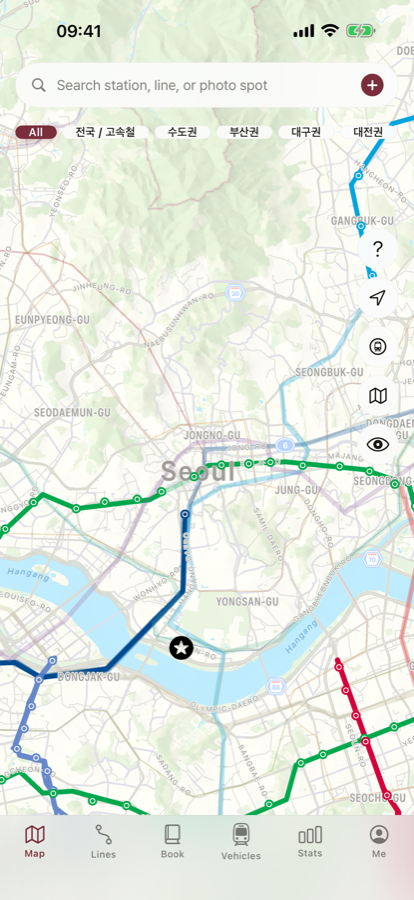
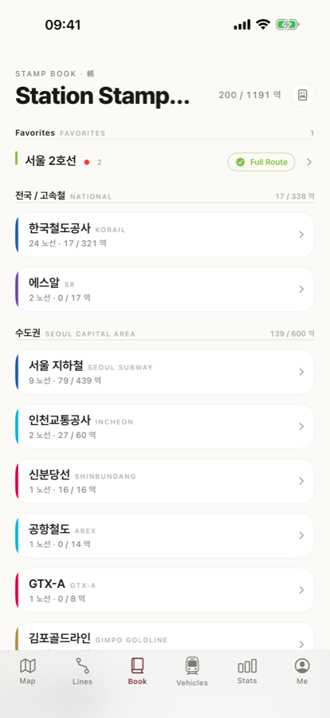
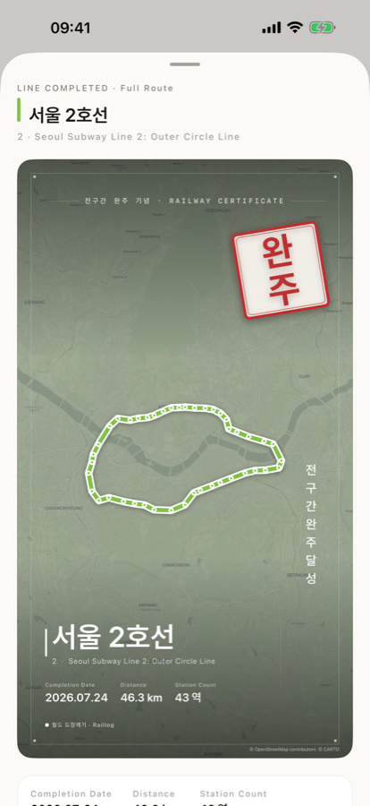

Tap a station to log it. Ridden lines turn their real color on the map, and every stop becomes a stamp in your book. Built for Korea's rail network — 17 operators, 55 lines, from the Seoul subway to the KTX and SRT.

Backfill rides from years ago — pick any visit date. Attach a photo or note to any station.
Every line you've ridden gets painted in its real color. Filter to unridden lines to plan your next trip.
Every station you visit becomes a stamp. Finish a line end-to-end and a Full Route seal card appears.
17 operators, 55 lines, 1,191 stations — from the subway to the KTX and SRT, all logged on one map.


Attach a photo or note to any station you log.
GPS finds nearby stations so you can log them on the spot.
Pick any date — backfill that Seoul subway trip from years ago.
Share your Full Route seal card straight to Instagram Stories.
iCloud sync carries your log across devices; export as JSON or CSV.
Start logging with no sign-up, even without a connection.
Browsing lines, logging rides, the stamp book, and iCloud sync are all free.
Pro adds unlimited favorite lines, detailed stats with a 17-province heatmap, watermark-free share cards, and a printable PDF stamp book. Priced in Korean won (KRW), the currency of the Korea App Store.